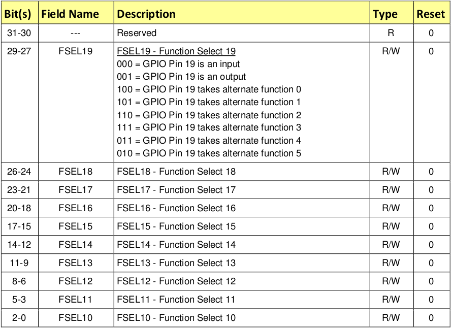

RPi OS 入门：裸机 “Hello, World!”
Table of Contents
通过编写一个小的裸机 Hello, World 应用程序开始我们的OS开发之旅
.假设您已通过Prerequisites并已准备就绪. 如果没有, 现在是时候这样做了
项目结构
简要描述此文件夹的主要组件：
- Makefile ：将使用 make 实用程序来构建内核. make的行为由Makefile配置, 该文件包含有关如何编译和链接源代码的说明
- build.sh or _build.bat_： 如果要使用Docker构建内核, 则需要这些文件. 您无需在笔记本电脑上安装make实用程序或编译器工具链
- src ： 此文件夹包含所有源代码
- include ：所有的头文件都放在这里
Makefile
现在, 来仔细看看项目Makefile
make程序的主要目的是自动确定需要重新编译什么程序的片段, 并发出命令来重新译编
下面列出了整个Makefile：
ARMGNU ?= aarch64-linux-gnu COPS = -Wall -nostdlib -nostartfiles -ffreestanding -Iinclude -mgeneral-regs-only ASMOPS = -Iinclude BUILD_DIR = build SRC_DIR = src all : kernel8.img clean : rm -rf $(BUILD_DIR) *.img $(BUILD_DIR)/%_c.o: $(SRC_DIR)/%.c mkdir -p $(@D) $(ARMGNU)-gcc $(COPS) -MMD -c $< -o $@ $(BUILD_DIR)/%_s.o: $(SRC_DIR)/%.S $(ARMGNU)-gcc $(ASMOPS) -MMD -c $< -o $@ C_FILES = $(wildcard $(SRC_DIR)/*.c) ASM_FILES = $(wildcard $(SRC_DIR)/*.S) OBJ_FILES = $(C_FILES:$(SRC_DIR)/%.c=$(BUILD_DIR)/%_c.o) OBJ_FILES += $(ASM_FILES:$(SRC_DIR)/%.S=$(BUILD_DIR)/%_s.o) DEP_FILES = $(OBJ_FILES:%.o=%.d) -include $(DEP_FILES) kernel8.img: $(SRC_DIR)/linker.ld $(OBJ_FILES) $(ARMGNU)-ld -T $(SRC_DIR)/linker.ld -o $(BUILD_DIR)/kernel8.elf $(OBJ_FILES) $(ARMGNU)-objcopy $(BUILD_DIR)/kernel8.elf -O binary kernel8.img
现在, 来详细阐述该文件：
ARMGNU ?= aarch64-linux-gnu
Makefile以变量定义开头. ARMGNU 是交叉编译器前缀. 因为正在x86计算机上编译arm64体系结构的源代码, 我们需要 交叉编译. 因此, 将使用 aarch64-linux-gnu-gcc 代替 gcc
COPS = -Wall -nostdlib -nostartfiles -ffreestanding -Iinclude -mgeneral-regs-only ASMOPS = -Iinclude
COPS 和 ASMOPS 是在编译C和汇编代码时分别传递给编译器的选项.这些选项的简短说明：
- -Wall : 显示所有警告
-nostdlib : 不使用C的标准库
C标准库中的大多数函数调用最终都会与操作系统交互 我们正在编写一个裸机程序, 并且没有任何底层操作系统, 因此C标准库无论如何都无法工作
-nostartfiles 不要使用标准的启动文件
启动文件负责设置初始堆栈指针, 初始化静态数据以及跳转到主入口点 这里需要我们自己完成所有这一切
-ffreestanding 独立环境 (ffreestanding)是标准库不存在的环境, 并且程序启动入口不是主要的
选项-ffreestanding指示编译器不需要定义标准函数具有其通常的意义
- -Iinclude : 在 include 文件夹中搜索头文件
-mgeneral-regs-only : 仅使用通用寄存器. ARM处理器还具有 NEON 寄存器
不希望编译器使用它们, 因为它们会增加额外的复杂性 例如, 因为需要在上下文切换期间存储寄存器
BUILD_DIR = build SRC_DIR = src
SRC_DIR 和 BUILD_DIR 是分别包含源代码和编译后Object文件的目录
all : kernel8.img clean : rm -rf $(BUILD_DIR) *.img
接下来, 定义make目标. 前两个参数非常简单:
all 参数是 默认 目标, 每当输入不带任何参数的make时, 它就会执行
make 始终使用第一个参数作为默认参数 这个参数只是将所有工作重定向到另一个参数, kernel8.img
- clean 参数负责删除所有编译附加文件和已编译内核映像
$(BUILD_DIR)/%_c.o: $(SRC_DIR)/%.c mkdir -p $(@D) $(ARMGNU)-gcc $(COPS) -MMD -c $< -o $@ $(BUILD_DIR)/%_s.o: $(SRC_DIR)/%.S $(ARMGNU)-gcc $(ASMOPS) -MMD -c $< -o $@
接下来的两个参数负责编译C和汇编文件
例如, 如果在 src 文件夹中有 foo.c 和 foo.S 文件 他们将会分别被编译为 build/foo_c.o 和 build/foo_s.o
$< 和 $@ 在运行时将被替换成 输入 文件名和 输出 文件名 (foo.c and foo_c.o). 在编译C文件之前, 还创建了一个 build 目录, 以防该目录不存在
C_FILES = $(wildcard $(SRC_DIR)/*.c) ASM_FILES = $(wildcard $(SRC_DIR)/*.S) OBJ_FILES = $(C_FILES:$(SRC_DIR)/%.c=$(BUILD_DIR)/%_c.o) OBJ_FILES += $(ASM_FILES:$(SRC_DIR)/%.S=$(BUILD_DIR)/%_s.o)
在这里, 正在构建一个由C和汇编源文件的串联创建的目标文件 OBJ_FILES 的数组
DEP_FILES = $(OBJ_FILES:%.o=%.d) -include $(DEP_FILES)
接下来的两行有些棘手. 如果看一下如何为C和汇编源文件定义编译目标, 会注意到我们使用了 -MMD 参数. 这个参数指示gcc编译器为每个生成的目标文件创建一个 依赖文件 。依赖性文件定义了特定源文件的所有依赖性. 这些依赖项通常包含所有包含的头文件的列表. 需要包括所有生成的依赖文件, 以便在头文件更改时知道要重新编译的内容
$(ARMGNU)-ld -T $(SRC_DIR)/linker.ld -o kernel8.elf $(OBJ_FILES)
使用链接器脚本 src /linker.ld 定义生成的 可执行映像的基本布局
$(ARMGNU)-objcopy kernel8.elf -O binary kernel8.img
kernel8.elf 遵循 ELF 格式
问题是ELF文件设计为由操作系统执行
要编写裸机程序, 需要从ELF文件中提取所有可执行文件和数据段, 然后将它们放入 kernel8.img 中
尾部的 8 表示ARMv8, 它是64位体系结构. 该文件名告诉固件将处理器引导到64位模式 也可以使用config.txt文件中的arm_control = 0x200标志以64位模式引导CPU RPi OS以前使用此方法, 仍然可以在一些练习答案中找到它. 然而, arm_control标志没有文档, 最好使用kernel8.img命名约定
链接器脚本
链接描述文件的主要目的是描述如何将输入目标文件 (_c.o和_s.o) 中的 段 映射 到 输出文件(.elf) 中
这里可以找到有关链接描述文件的更多信息: https://sourceware.org/binutils/docs/ld/Scripts.html#Scripts
现在看一下RPi OS链接器脚本:
SECTIONS
{
.text.boot : { *(.text.boot) }
.text : { *(.text) }
.rodata : { *(.rodata) }
.data : { *(.data) }
. = ALIGN(0x8);
bss_begin = .;
.bss : { *(.bss*) }
bss_end = .;
}
启动后, Raspberry Pi将 kernel8.img 加载到内存中, 并从文件开头开始执行
这就是为什么.text.boot部分必须放在第一的原因 也因此操作系统引导代码将被放到这里
- .text, .rodata , 和 .data 部分分别包含内核编译的 代码段 , 只读数据段 , 和 一般数据段
- .bss 部分包含 应 初始化 为 0 的数据
通过将此类数据放在单独的段中, 编译器可以在ELF二进制文件中节省一些空间
只有段大小存储在ELF标头中, 但段本身被省略
将img加载到内存后, 必须手动将 .bss 部分初始化为0;
这就是为什么需要记录本段的开始和结束 也就是bss_begin和bss_end符号
对齐该段, 使其以 8 的倍数开头的地址开始
如果该部分未对齐, 使用str指令在bss节的开头存储0会更加困难 因为str指令只能与8字节对齐的地址一起使用
引导内核
现在是时候看看 boot.S 文件了. 此文件包含内核启动代码：
#include "mm.h" .section ".text.boot" .globl _start _start: mrs x0, mpidr_el1 and x0, x0,#0xFF // Check processor id cbz x0, master // Hang for all non-primary CPU b proc_hang proc_hang: b proc_hang master: adr x0, bss_begin adr x1, bss_end sub x1, x1, x0 bl memzero mov sp, #LOW_MEMORY bl kernel_main
让我们详细查看该文件：
.section ".text.boot"
首先, 指定在boot.S中的所有内容都应在 .text.boot 部分中. 前面已经看到, 该节通过链接描述文件放置在内核映像的开头。因此, 当内核启动时, 执行从 start 函数开始：
.globl _start _start: mrs x0, mpidr_el1 and x0, x0,#0xFF // Check processor id cbz x0, master // Hang for all non-primary CPU b proc_hang
这个函数做的第一件事就是检查 processor id . Raspberry Pi 3 有四个核心, 设备开启之后, 每个核心处理相同的代码
然而, 现在不需要四个核心都工作; 希望只是用第一个核心并且将其他核心放到尾部的无穷循环中
这就是 _start 函数的做的事情. 从 mpidr_el1 系统寄存器获取 processor ID. 如果当前 process ID 是 0, 之后执行跳转到 master 函数:
master: adr x0, bss_begin adr x1, bss_end sub x1, x1, x0 bl memzero
在这里, 通过调用 memzero 来清理 .bss段
稍后将定义 memzero 函数 在ARMv8架构中, 按照惯例, 前七个参数通过寄存器 x0 – x6 传递给调用的函数 memzero 函数仅接受两个参数: 起始地址 (bss_begin) 以及需要清理的部分的大小 (bss_end - bss_begin)
mov sp, #LOW_MEMORY bl kernel_main
清理 .bss段 后, 接着 初始化 堆栈指针 并将 执行 传递 给 kernel_main 函数
Raspberry Pi在地址0加载内核，这就是为什么可以将初始堆栈指针设置到足够高的任何位置的原因 即使当堆栈映像变得足够大时, 堆栈不会覆盖内核映像
LOW_MEMORY 在 mm.h 中定义等于 4MB
我们的内核堆栈不会变得很大, 并且img本身很小, 因此4MB已经绰绰有余
assembler instructions
对于那些不熟悉ARM汇编器语法的人, 快速总结一下已经使用的指令：
- mrs : 将值从系统寄存器加载到通用寄存器 x0 – x30
and : 执行逻辑与运算
使用此命令从 mpidr_el1 寄存器中将获得的值剥离最后一个字节
- cbz : 比较之前执行的操作的结果, 并且如果比较结果为真, 就跳转 (在ARM术语中也叫做 branch) 到提供的标签
- b : 无条件跳转到某个标签(branch)
adr : 将标签的相对地址加载到目标寄存器中
在这种情况下, 需要指向.bss区域开始和结束的指针
- sub : 从两个寄存器取值互减.
- bl : 执行无条件分支并将返回地址存储在 x30 中(链接寄存器). 子程序完成后, 使用ret指令跳回到调用人地址.
- mov : 在寄存器之间移动一个值 或者 从常量移动到寄存器
kernel_main 函数
已经看到引导代码最终将控制权传递给了 kernel_main 函数：
#include "mini_uart.h" void kernel_main(void) { uart_init(); uart_send_string("Hello, world!\r\n"); while (1) { uart_send(uart_recv()); } }
此函数是内核中最简单的函数之一. 它与 Mini UART 设备 打印到屏幕并读取用户输入. 内核只是打印 Hello, world! 然后进入无限循环, 此循环从用户读取字符并将其发送回屏幕
Raspberry Pi devices
现在, 将深入研究Raspberry Pi的特定功能
开始之前, 建议下载BCM2837 ARM Peripherals manual
BCM2837 是 Raspberry Pi 3 Model B 和 B+ 使用的芯片
在讨论中, 有时还将提到 BCM2835 和 BCM2836 - 这些是旧版Raspberry Pi中使用的芯片的名称
在进行到细节之前, 想分享一些有关如何使用 内存映射设备 的基本概念. BCM2837 是一个简单的 SOC (System on a chip 系统) 芯片. 在这样的芯片上, 通过映射到内存的寄存器访问设备. Raspberry Pi 3 保留比 0x3F000000 高位的地址用于 设备 . 去启用或者配置一个特定设备, 需要写入到设备的一个寄存器中一些数据. 一个设备的寄存器在内存中占据 32位 。 BCM2837 ARM Peripherals 手册中描述了寄存器中每一位的作用
在手册中看一下 1.2.3节 ARM 的物理地址和有关更多为什么用 0x3F000000 作为基地址的背景信息 即使在整个手册中使用 0x7E000000
从 kernel_main 函数, 可以想到将使用 Mini UART设备. UART代表 Universal asynchronous receiver-transmitter （通用异步收发器）。该设备能够将存储在其存储器映射寄存器之一中的值转换为 高电压 和 低电压 序列 . 该序列通过 TTL转串口电缆 传递到计算机, 并由 终端仿真器 解释
我们将使用Mini UART来促进与Raspberry Pi的通信 如果要查看Mini UART寄存器的规范, 请阅读 BCM2837 ARM Peripherals手册
Raspberry Pi具有两个UART： MINI UART 和 PL011 UART
在本教程中, 我们将仅使用第一个教程, 因为它更简单 但是, 有一个可选的exercise显示了如何使用PL011 UART
GPIO
需要熟悉的另一个设备是 GPIO General-purpose input/output （通用输入/输出）。GPIO负责控制GPIO引脚. 应该能够在下图中轻松识别它们：

GPIO可用于配置不同GPIO引脚的行为. 例如, 为了能够使用Mini UART, 需要 激活 引脚14 和 15 并将其设置为使用此设备。下图说明了如何将数字分配给GPIO引脚：

初始化 Mini UART
现在看一下如何初始化 MINI UART。该代码在 mini_uart.c :
void uart_init ( void ) { unsigned int selector; selector = get32(GPFSEL1); selector &= ~(7<<12); // 把 gpio14 清除 selector |= 2<<12; // 把 gpio14 设置为 模式5 (alt5) selector &= ~(7<<15); // 把 gpio15 清除 selector |= 2<<15; // 把 gpio15 设置为 模式5 (alt5) put32(GPFSEL1,selector); put32(GPPUD,0); delay(150); put32(GPPUDCLK0,(1<<14)|(1<<15)); delay(150); put32(GPPUDCLK0,0); put32(AUX_ENABLES,1); // 启动 mini uart (同时允许写入它的寄存器) put32(AUX_MU_CNTL_REG,0); // 禁用自动流控, 接收器以及发射器 (这是暂时的) put32(AUX_MU_IER_REG,0); // 禁用接受和发送中断 put32(AUX_MU_LCR_REG,3); // 启用 8bit 模式 put32(AUX_MU_MCR_REG,0); // 把 RTS line 设置为永远高电平 put32(AUX_MU_BAUD_REG,270); // 设置比特率为 115200 put32(AUX_MU_CNTL_REG,3); // 最后, 启用发射器和接收器 }
在这里, 我们使用两个函数 put32 和 get32 . 这些功能非常简单; 它们允许在32位寄存器中读写数据
这两个函 utils.S 中实现 uart_init 是本课中最复杂, 最重要的功能之一, 在接下来的三个小节里继续进行研究
GPIO 功能选择
首先, 需要 激活 GPIO引脚 . 大多数引脚可以与不同的设备一起使用, 所以在使用特定的引脚之前, 需要设置引脚的 替代功能 (alternative function). 替代功能可以为每个引脚设置的0到5之间的数字, 并配置将哪个设备连接到该引脚。在下图中可以看到所有可用的GPIO替代功能的列表：
在这里可以看到 引脚 14 和 15 具有 TXD1 和 RXD1 替代功能. 这意味着如果为引脚14和15选择替代功能编号 5 , 它们将分别用作 Mini UART发送数据引脚 和 Mini UART接收数据引脚 。 GPFSEL1 寄存器用于控制引脚 10-19 的替代功能

下面这些代码用于配置GPIO引脚14和15以与Mini UART器件配合使用：
unsigned int selector; selector = get32(GPFSEL1); selector &= ~(7<<12); // 将 gpio14 清除 selector |= 2<<12; // 将 gpio14 设置为 5 (alt5) selector &= ~(7<<15); // 将 gpio15 清除 selector |= 2<<15; // 把 gpio15 设置为5 (alt 5) put32(GPFSEL1, selector);
GPIO pull-up/down
当使用Raspberry Pi GPIO引脚时, 经常会遇到诸如上拉/下拉等术语. 这些概念的详细解释在 https://grantwinney.com/using-pullup-and-pulldown-resistors-on-the-raspberry-pi/ 这篇 文章中. 对于那些懒于阅读整篇文章的人, 简要解释上拉/下拉概念
如果使用特定的引脚作为输入, 并且不将该引脚连接任何东西, 则将无法识别该引脚的值是1还是0. 实际上, 设备将报告为随机值. 上拉 / 下拉 机制可解决此问题. 如果将引脚设置为上拉状态, 但没有任何连接, 则引脚将始终报告 1 (对于下拉状态, 该值始终为0)
就我们而言, 既不需要上拉状态也不需要下拉状态, 因为 14 和 15 引脚将一直保持连接状态 即使重新启动后, 引脚状态也会保留, 因此在使用任何引脚之前, 总是必须初始化其状态 有三种可用状态: 上拉, 下拉和两者都不显示(以删除当前的上拉或下拉状态), 这里我们需要第三个
引脚状态之间的切换不是一个非常简单的过程, 因为它需要物理上触发电路上的一个开关. 该过程涉及 GPPUD 和 GPPUDCLK 寄存器。 在 BCM2837 ARM Peripherals 手册的第101页中进行了描述如果通过 GPIO上/下时钟寄存器 控制 相应GPIO引脚 上下拉的设置. 这些寄存器必须与GPPUD结合使用 寄存器以影响GPIO上拉/下拉更改
需要以下事件顺序： 1. 写入GPPUD以设置所需的控制信号(即上拉或下拉, 或都不设置以消除当前的上拉/下拉) 2. 等待150个周期：这为控制信号提供了所需的建立时间 3. 写入 GPPUDCLK0/1 以将控制信号输入您要修改的GPIO引脚：注意只有接收时钟的引脚会被修改, 所有其他将保持以前的状态. 4. 等待150个循环： 这为控制信号提供了所需的保持时间 5. 写入GPPUD以删除控制信号 6. 写入 GPPUDCLK0/1 以删除时钟
此过程描述了如何从引脚上移除上拉和下拉状态。在下面的代码中, 对引脚14和15进行操作：
put32(GPPUD, 0); delay(150); put32(GPPUDCLK0, (1<<14)|(1<<15)); delay(150); put32(GPPUDCLK0, 0);
初始化Mini UART
现在 Mini UART已连接到GPIO引脚, 并且已配置了这些引脚. uart_init函数的其余部分专用于Mini UART初始化
put32(AUX_ENABLES,1); // 启动 mini uart (同时允许写入它的寄存器) put32(AUX_MU_CNTL_REG,0); // 禁用自动流控, 接收器以及发射器 (这是暂时的) put32(AUX_MU_IER_REG,0); // 禁用接受和发送中断 put32(AUX_MU_LCR_REG,3); // 启用 8bit 模式 put32(AUX_MU_MCR_REG,0); // 把 RTS line 设置为永远高电平 put32(AUX_MU_BAUD_REG,270); // 设置比特率为 115200 put32(AUX_MU_IIR_REG,6); // Clear FIFO put32(AUX_MU_CNTL_REG,3); // 最后, 启用发射器和接收器
逐行检查此代码段:
put32(AUX_ENABLES,1); // 启动 mini uart (同时允许写入它的寄存器)
这行启动了 Mini UART. 必须在一开始就这样做, 因为这样才可以访问所有其他 Mini UART 寄存器
put32(AUX_MU_CNTL_REG,0); // 禁用自动流控, 接收器以及发射器 (这是暂时的)
在这里, 在配置完成之前禁用接收器和发送器
接下来将永久禁用自动流控制, 因为它需要使用其他GPIO引脚, 而TTL转串口电缆不支持
put32(AUX_MU_IER_REG,0); // 禁用接受和发送中断
可以配置Mini UART, 以在每次有新数据可用时产生处理器中断
将在以后中开始处理中断, 所以现在禁用此功能
put32(AUX_MU_LCR_REG,3); // 启用 8bit 模式
MINI UART可以支持7位或8位操作. 这是因为ASCII字符对于标准集是7位, 扩展集是8位。这里使用8位模式
put32(AUX_MU_MCR_REG,0); // 把 RTS line 设置为永远高电平
RTS line 用于流量控制, 不需要它. 始终将其设置为高.
put32(AUX_MU_BAUD_REG,270); //Set baud rate to 115200
波特率是在通信信道中传输信息的速率： 115200 表示该串行端口每秒最多可传输115200位。Raspberry Pi 的 MINI UART设备的波特率应与终端仿真器中的波特率相同。Mini UART根据以下公式计算波特率:
baudrate = system_clock_freq / (8 * ( baudrate_reg + 1 ))
system_clock_freq是 250 MHz, 这样就可以轻松计算出 baudrate_reg 应为 270
put32(AUX_MU_CNTL_REG,3); // 最后, 启用发射器和接收器
执行完此行后, Mini UART准备就绪！
使用Mini UART
Mini UART准备好后, 可以尝试使用它来发送和接收一些数据. 为此, 实现了以下两个函数：
void uart_send ( char c ) { while(1) { if(get32(AUX_MU_LSR_REG)&0x20) break; } put32(AUX_MU_IO_REG,c); } char uart_recv ( void ) { while(1) { if(get32(AUX_MU_LSR_REG)&0x01) break; } return(get32(AUX_MU_IO_REG)&0xFF); }
这两个函数：
- 都以无限循环开始, 其目的是验证设备是否已准备好发送或接收数据. 使用 AUX_MU_LSR_REG 寄存器来执行此操作
- 第 零 位, 如果设置为 1 , 表示数据已 准备就绪 ; 这意味着我们可以从 MINI UART中 读取
- 第 五 位, 如果设置为 1 , 表示发射器是 空闲 的, 这意味着我们可以 写入 MINI UART
- 使用 AUX_MU_IO_REG 来 存储 已发送字符的值或 读取 已接收字符的值
还有一个非常简单的功能, 能够发送字符串而不是字符：
void uart_send_string(char* str) { for (int i = 0; str[i] != '\0'; i ++) { uart_send((char)str[i]); } }
Raspberry Pi 配置
Raspberry Pi的启动顺序如下(简化):
- 设备上电
- GPU启动并从启动分区读取 config.txt 文件. 该文件包含一些配置参数, GPU使用这些参数进一步调整启动顺序
- kernel8.img 被加载到内存中并执行
为了能够运行我们的简单操作系统, config.txt文件应为以下文件:
kernel_old=1 disable_commandline_tags=1
- kernel_old=1: 内核将被加载到内存地址0
- disable_commandline_tags: gpu不会传递任何参数给加载的内核
内核测试
现在已经遍历了所有源代码, 是时候来看一下它的工作了
要构建和测试内核, 需要执行以下操作：
- 执行 ./build.sh 或者 ./build.bat 从 src/lesson01 去构建内核
将生成的 kernel8.img 文件 复制 到 Raspberry Pi 闪存卡的 boot 分区 和 删除 kernel7.img
请保留启动分区中的所有其他文件
- 如上一节所述修改 config.txt 文件
- 连接 USB至TTL 串行电缆
- 给 Raspberry Pi 供电
- 打开终端模拟器. 应该可以在那里看到 Hello, world！ 消息
请注意, 上述步骤顺序假定 SD卡上已安装Raspbian
当然也可以使用空的SD卡运行RPi OS
- 准备 SD卡:
- 使用 MBR分区表
将 boot 分区格式化为 FAT32
该卡的格式应与安装Raspbian所需的格式完全相同 可以查看 HOW TO FORMAT AN SD CARD AS FAT 部分在 official documenation 官方文档 来获取更多信息
- 将以下文件复制到卡中：
- bootcode.bin : 这是 GPU引导程序 , 它包含用于 启动 GPU和 加载 GPU固件的GPU代码
- start.elf 这是 GPU固件 . 它 读取 config.txt , 并使GPU从 kernel8.img 加载并运行ARM特定的用户代码
- 复制 kernel8.img 和 config.txt 文件
- 连接 USB至TTL 串行电缆
- 给 Raspberry Pi 供电
- 使用终端仿真器连接到RPi OS
不幸的是, 所有Raspberry Pi固件文件都是闭源的没有文档 有关Raspberry Pi启动顺序的更多信息, 可以参考一些非官方的资料, 比如 (https://raspberrypi.stackexchange.com/questions/10442/what-is-the-boot-sequence) StackExchange 问题 (https://github.com/DieterReuter/workshop-raspberrypi-64bit-os/blob/master/part1-bootloader.md) 这个 Github 仓库
| Next: Linux 项目结构 | Home: 内核初始化 |